4. S3の処理¶
4.1. S3とローカルディレクトリを同期する¶
AWS CLIを利用して、ローカルのディレクトリとS3のディレクトリを同期する
コマンドとしては左側から右側へコピーをする
aws s3 sync [FROM_DIR] [TARGET_DIR] --exact-timestamps
--exact-timestampsを付与すると、タイムスタンプを見て、同期を判断する（デフォルトはファイルサイズ）--deleteを付与するとコピー元にないファイルを削除しようとする
4.1.1. S3にあるファイルをローカルに同期¶
aws s3 sync s3://[BUCKET_NAME] [LOCAL_DIR] --exact-timestamps
4.1.2. ローカルにあるファイルをS3に同期¶
aws s3 sync [LOCAL_DIR] s3://[BUCKET_NAME] --exact-timestamps --delete
4.1.3. 参考文献¶
4.2. ライフサイクルの設定¶
S3に格納されるオブジェクトに対して、ライフサイクルを設定することで、一定期間が経った段階でストレージクラスのレベルを変更したり、削除したりすることができる。
4.2.1. ルールのアクション¶
ライフサイクルで設定することができるルールについて整理する。
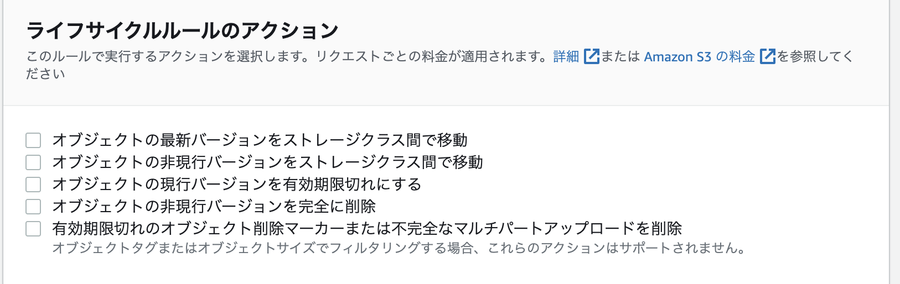
オブジェクトの最新バージョンをストレージクラス間で移動
期限を迎えたオブジェクトをS3から別のストレージクラスに移動させるオブジェクトの非現行バージョンをストレージクラス間で移動
期限を迎えたオブジェクトの古いバージョンをS3から別のストレージクラスに移動させる（バージョニングが有効の場合のみ）オブジェクトの現行バージョンを有効期限切れにする
バージョニングが有効：古いバージョンとなる
バージョニングが無効：削除される
オブジェクトの非現行バージョンを完全に削除
期限を迎えたオブジェクトの古いバージョンを削除する
4.2.2. 設定方法¶
対象のバケットを選択して管理タブを開きライフサイクルルールを作成を選択
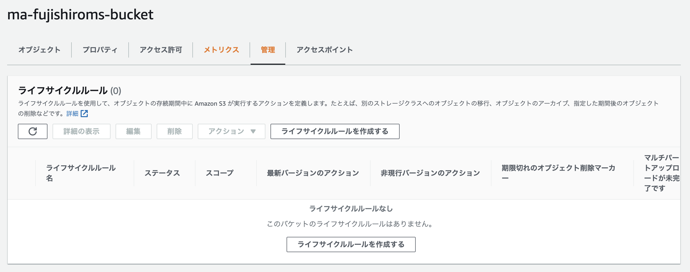
ライフサイクルルール名を指定して、プレフィックスには、対象となるフォルダを記述する。
※S3 バケットからのフルパスではなくて、対象のフォルダ名だけでOK
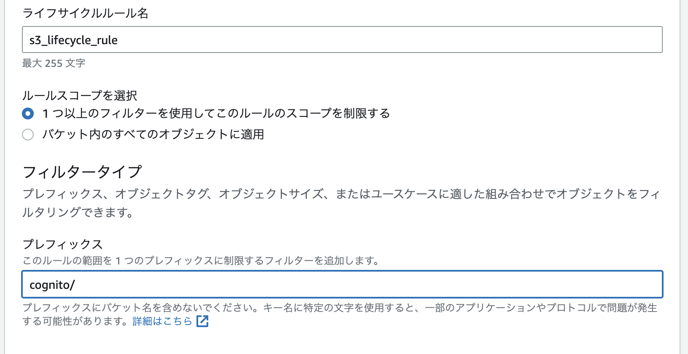
ライフサイクルのルールを設定して、ルールが適用される日数（作成されたからの日数）を指定する
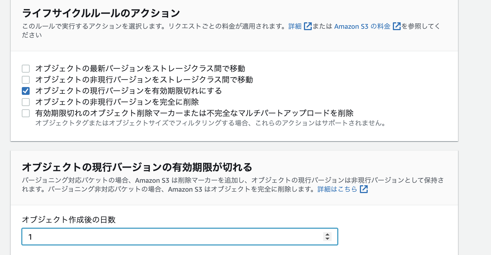
4.2.3. 設定確認¶
今回作成されたルールが各オブジェクトに適用されているかのルールを確認する。
設定したprefix配下のオブジェクトを選択し、プロパティの中にオブジェクト管理の概要という項目があり有効期限ルールの箇所に削除日時が表示されている。
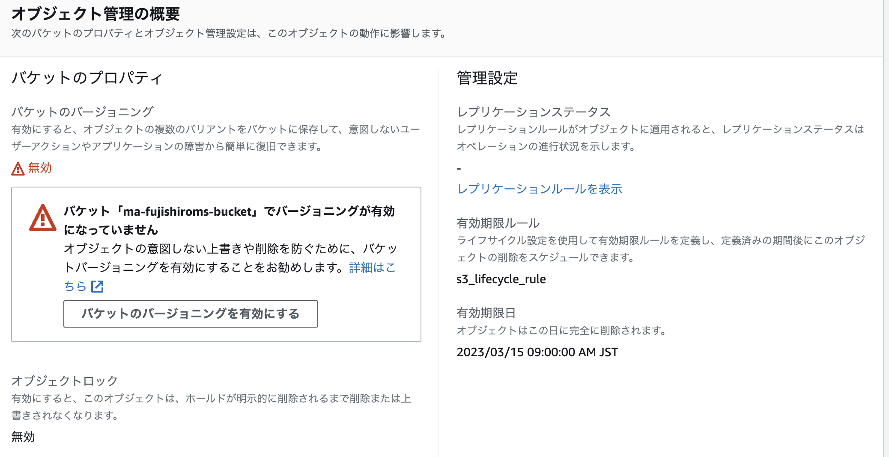
4.2.4. 削除タイミングについて¶
挙動としては、設定された日時を迎えたら9:00(JST)に非同期の削除バッチに追加されて、削除が開始される。 設定時に削除の期限を迎えていた場合は、次の9:00(JST)に削除バッチに追加される。
処理としては、非同期のバッチに入ってから削除されるので9:00に削除されるとは限らない。金額は設定時で換算される。
4.2.5. 注意事項¶
ライフサイクルによって、フォルダ配下のファイルが全て削除されると、フォルダ自体も削除されてしまう点に注意。
データをアップロードするときにもパスを指定するとフォルダごと作成してくれるので、影響はないはず。
4.2.6. 参考文献¶
S3のライフサイクルルールのアクションを理解する
設定できるルールのアクションについて解説している。S3ライフサイクルルールで古いオブジェクトを自動削除する
一番丁寧に設定順序を整理してくれている削除ルールを作成した時点ですでに期限が切れているオブジェクトを、ライフサイクルルールで削除するときの削除タイミングを教えてください
削除のタイミングについて解説している
4.3. S3レプリケーション¶
S3のレプリケーションを利用することで、以下のようなメリットを享受できる
バックアップのバケット複製
ログの単一バケット集約
異なるアカウント間のオブジェクト連携
4.3.1. クロスリージョン・同一リージョンのレプリケーション¶
S3のレプリケーションにはリージョン間でレプリケーションを行うCRR(Cross-Region Replication)と同一のリージョンでレプリケーションを行うSRR（Single-Region Replication)がある。
4.3.2. 注意点¶
レプリケーション設定前に存在しているオブジェクトはレプリケーションされない
双方のバケットでバージョニングの有効化が必要
ライフサイクルのアクションなどはレプリケーションされない
4.3.3. 通信経路について¶
明示的に記述はないが、SRRではAWS内部のトラフィックを利用しているので、料金に通信量などが書かれていない。
4.3.4. 同一リージョンで異なるアカウント間のS3でレプリケーション¶
手順は以下
事前準備
S3バケットの作成
バージョニングの有効化
リソースの格納
レプリケーションルールの設定
IAMポリシーの設定
バケットポリシーの設定
4.3.5. 事前準備¶
4.3.5.1. S3バケットの作成¶
Account-AとAccount-BでS3バケットを作成する。
両方を同一リージョン（ap-northeast-1)
バージョングを有効化
パブリックアクセスブロックを有効化

4.3.5.2. 送信元バケットのレプリケーション設定¶
S3バケットの設定タブからレプリケーションルールを作成する
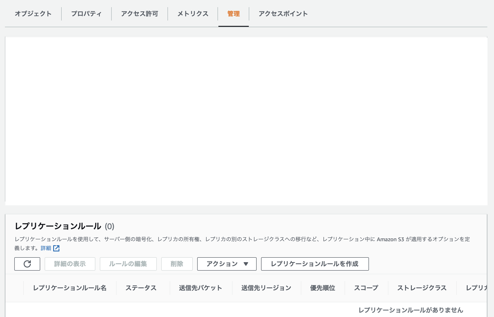
具体的には以下の内容を設定
基本設定
ルール名：
myaccount_to_ma_replication_ruleステータス：有効
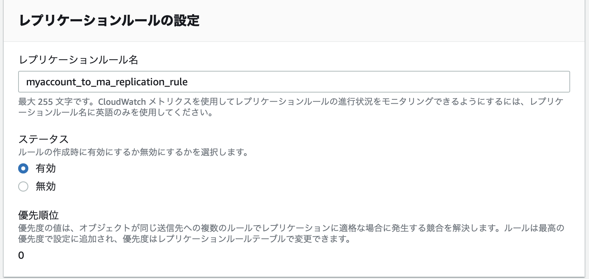
ソースバケット
スコープ：レプリケーション対象を限定可能だが、今回は全てを対象とする
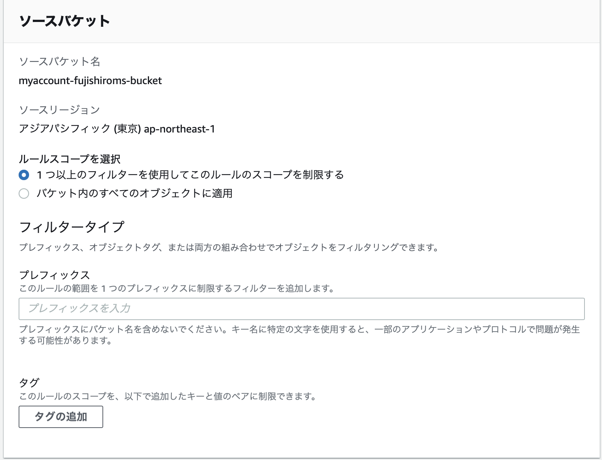
送信先
別アカウントの場合、IDとバケット名を指定
送信先のオブジェクトの所有者をバケットの所有者とする
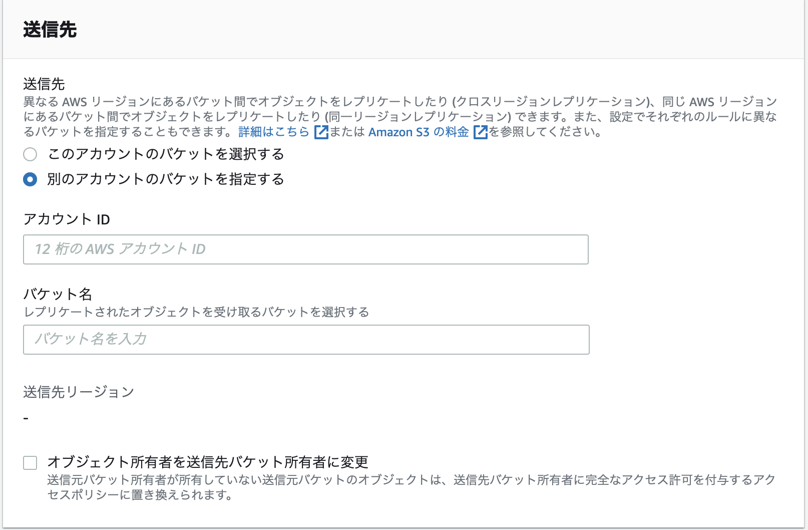
IAMロール
新しいIAMロールを作成する
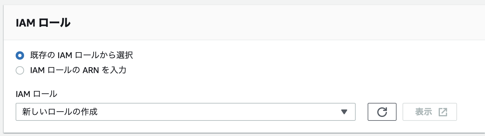
暗号化：今回はデフォルトのまま
送信先ストレージクラス：今回はデフォルトのまま
追加のレプリケーションオプション
レプリケーション時間のコントロール (RTC)を選択することで15分以内にコピーがされる

4.3.5.3. 新規で作成されたIAMの確認¶
以下のポリシーが付与されている。 次の送信先の設定で利用するため、IAMロールのARNをメモしておく。
{
"Version": "2012-10-17",
"Statement": [
{
"Action": [
"s3:ListBucket",
"s3:GetReplicationConfiguration",
"s3:GetObjectVersionForReplication",
"s3:GetObjectVersionAcl",
"s3:GetObjectVersionTagging",
"s3:GetObjectRetention",
"s3:GetObjectLegalHold"
],
"Effect": "Allow",
"Resource": [
"arn:aws:s3:::＜送信元バケット＞",
"arn:aws:s3:::＜送信元バケット＞/*",
"arn:aws:s3:::＜送信先バケット＞",
"arn:aws:s3:::＜送信先バケット＞/*"
]
},
{
"Action": [
"s3:ReplicateObject",
"s3:ReplicateDelete",
"s3:ReplicateTags",
"s3:ObjectOwnerOverrideToBucketOwner"
],
"Effect": "Allow",
"Resource": [
"arn:aws:s3:::＜送信元バケット＞/*",
"arn:aws:s3:::＜送信先バケット＞/*"
]
}
]
}
4.3.5.4. 送信先バケットのポリシー設定¶
送信先バケットにて、バケットポリシーを編集する
{
"Version": "2012-10-17",
"Statement": [
{
"Sid": "1",
"Effect": "Allow",
"Principal": {
"AWS": "arn:aws:iam::＜送信元アカウントID＞:role/service-role/＜送信元IAMロール＞"
},
"Action": [
"s3:ReplicateDelete",
"s3:ReplicateObject",
"s3:ReplicateTags",
"s3:ObjectOwnerOverrideToBucketOwner"
],
"Resource": "arn:aws:s3:::＜送信先バケット＞/*"
}
]
}
4.3.5.5. 動作確認¶
送信元のバケットにオブジェクトを格納する。 アップロードしたオブジェクトのプロパティからレプリケーションステータスを確認するとレプリケーションの状況を確認することができる。
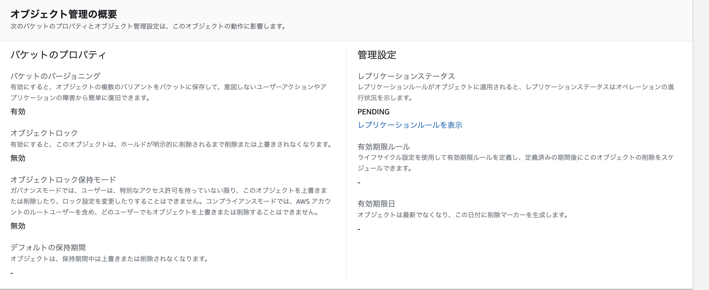
15分すると、送信先にオブジェクトがアップロードされる
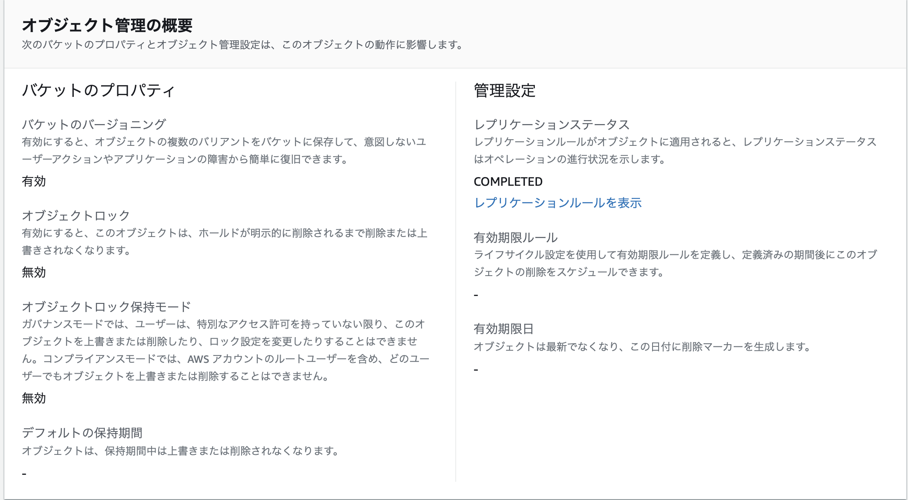
4.3.5.6. S3レプリケーションをイベント契機にする場合¶
S3のレプリケーションによって、ファイルがアップロードされた場合のイベントはS3:ObjectCreated:Putであるので、注意。
ちなみに、S3 syncコマンドによるファイルアップロードはS3:ObjectCreated:Copyとなる。